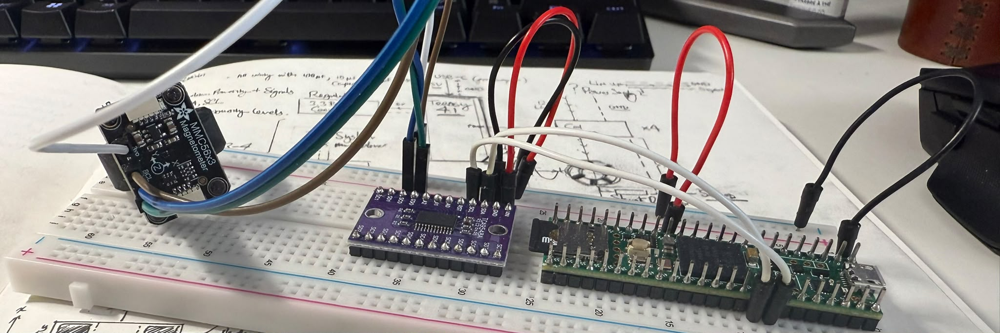

Manifesto
About
This website is made to share and help you understand this project. It includes the underlying concept, core convictions, and the road ahead. This is actually an extension of one of my notion pages that was talking about all the difficult questions that people asked me and the countless ones I asked myself.
What is this?
This project aims to measure and read movement from your hands, using the changes in electromagnetic fields.
Why make this?
I will split this into sections because there are actually many key reasons I have, and I still don't think it's enough to fulfill the actual question.
- I need to keep myself busy with a hard project otherwise I lose focus.
- It will help me learn things that I didn't even know I needed to learn in the first place.
- I want to make something useful that can help people on a larger scale.
- I need to prove to myself that this can become more than an idea.
Okay, but this already exists. Why make something that already exists?
I think that the fact that a technology already exists is far from a reason to stop working on it, but rather learning to build it fundamentally gives you really unique insights into it. Its a similar chemistry to the question: "Why do you learn high school physics when its all already known?" I guess its to explore further possibilities than the current companies that have a long standing development (e.g manus or haptX), as I may have a different personal approach, a different perspective towards the future.
Why you, specifically?
I actually don't think there is a reason that I, specifically, should succeed more than any other person that is trying to do the same thing. But I have thought about the entire project for the past 6 months just thinking about the fundamental beliefs I have (specificall about the future, culture and very primitive principles that I wont share here, maybe in the future), and if my project will allign with them. And the answer is yes.
What Product are you aiming to create in the end?
I want to be able to connect to the internet and use a computer anywhere, without bringing anything with me. Glasses provide the system, and the gloves provide the interface (the technology for ar glasses seems to be very close to fruition but i dont see much development in the interface part of things.)
How do I know if you're serious about this?
I'm going to stop talking now and just show you progress.
2026, Leonard Cheung